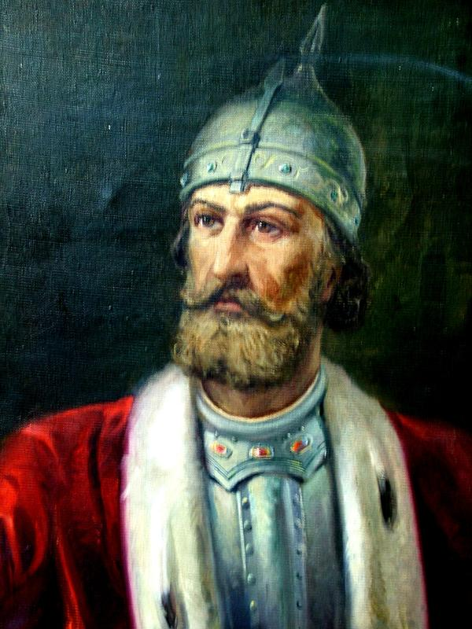
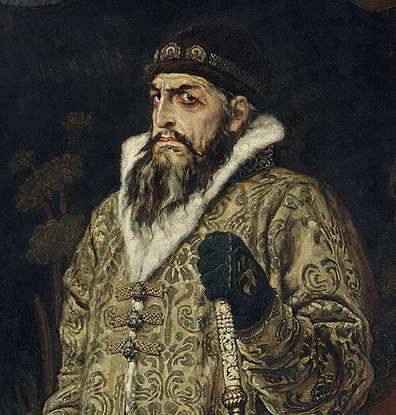
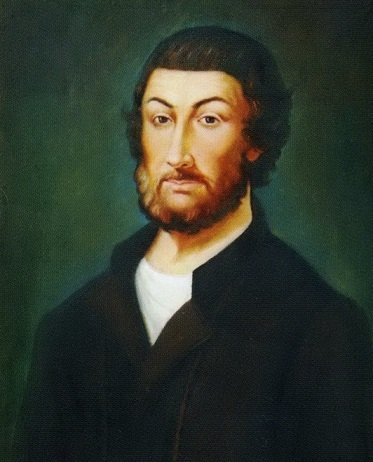
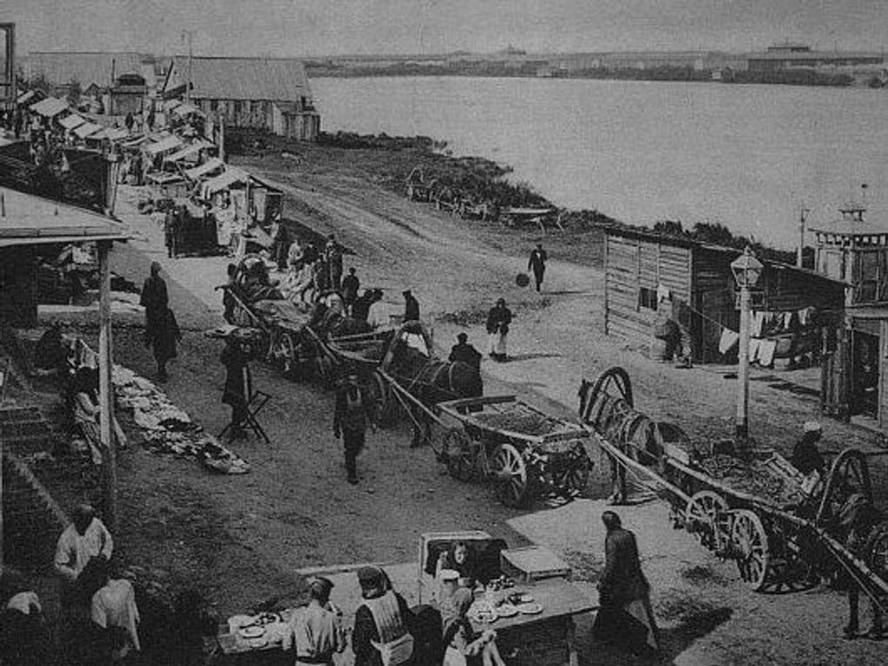
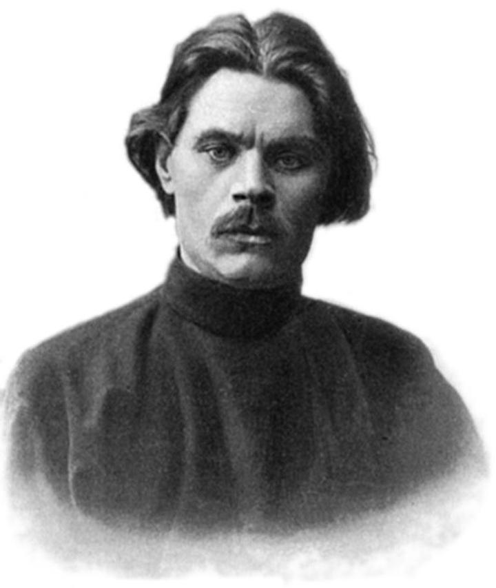

История города
1221 год — Основание города
Князь Юрий Всеволодович основал город как опорный пункт для защиты границ Владимиро-Суздальского княжества.

Юрий Всеволодович
Великий князь Владимирский, основатель Нижнего Новгорода.
📖 Интересный факт: Город назван "Новым" потому что уже существовал Новгород Великий.XVI век — Кремль и расцвет
При Иване Грозном построен каменный кремль, который ни разу не был взят врагом. Город становится важным торговым центром.

Иван IV Грозный
При нём построили каменный кремль — символ могущества города.
🏰 Интересный факт: Кремль ни разу не был захвачен врагом!1612 год — Подвиг Минина и Пожарского
Нижегородский земский староста Кузьма Минин собрал народное ополчение для освобождения Москвы от поляков.

Кузьма Минин
Нижегородский купец, организатор народного ополчения 1612 года.
⚔️ Интересный факт: Памятник Минину и Пожарскому стоит на Красной площади в Москве!XIX век — Нижегородская ярмарка
Крупнейшая ярмарка в Российской империи, куда съезжались купцы со всего мира. Город называли «карманом России».

Нижегородская ярмарка
Главный торговый центр Российской империи XIX века.
💰 Интересный факт: Товарооборот достигал 200 млн рублей в год!1932-1990 — Город Горький
В советское время город переименовали в Горький в честь писателя Максима Горького. Был закрытым городом из-за оборонных заводов.

Максим Горький
Известный русский писатель, родился в Нижнем Новгороде.
📚 Интересный факт: Город был закрытым для иностранцев до 1991 года.1990 год — Возвращение исторического названия
Городу вернули имя Нижний Новгород. Сегодня это современный мегаполис с богатой историей.

Современный Нижний Новгород
Город-миллионник, культурная и промышленная столица Поволжья.
🌟 Интересный факт: В 2021 году Нижний Новгород отметил 800-летие!